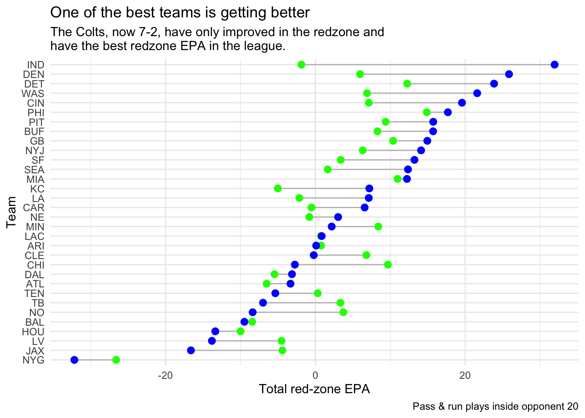

Few stats reveal a team’s growth like red-zone efficiency — and this season’s shifts tell a clear story.
The Colts have emerged as the defining example, turning an already explosive offense into the league’s most efficient unit near the goal line. Detroit and Denver have climbed right behind them, converting drives at an elite clip, while the Giants and Houston continue to stall out when it matters most. Even Baltimore, steady elsewhere, hasn’t shown much red-zone progress — a trend likely tied to Lamar Jackson’s extended absence.
Code
library(nflreadr)library(tidyverse)
── Attaching core tidyverse packages ──────────────────────── tidyverse 2.0.0 ──
✔ dplyr 1.1.4 ✔ readr 2.1.5
✔ forcats 1.0.0 ✔ stringr 1.5.1
✔ ggplot2 3.5.1 ✔ tibble 3.2.1
✔ lubridate 1.9.3 ✔ tidyr 1.3.1
✔ purrr 1.0.2
── Conflicts ────────────────────────────────────────── tidyverse_conflicts() ──
✖ dplyr::filter() masks stats::filter()
✖ dplyr::lag() masks stats::lag()
ℹ Use the conflicted package (<http://conflicted.r-lib.org/>) to force all conflicts to become errors
── nflverse play by play data ──────────────────────────────────────────────────
ℹ Data updated: 2025-11-07 04:24:41 EST
# A tibble: 2,609 × 372
play_id game_id old_game_id home_team away_team season_type week posteam
<dbl> <chr> <chr> <chr> <chr> <chr> <int> <chr>
1 575 2025_01_AR… 2025090705 NO ARI REG 1 ARI
2 1101 2025_01_AR… 2025090705 NO ARI REG 1 NO
3 1218 2025_01_AR… 2025090705 NO ARI REG 1 ARI
4 1240 2025_01_AR… 2025090705 NO ARI REG 1 ARI
5 1262 2025_01_AR… 2025090705 NO ARI REG 1 ARI
6 1318 2025_01_AR… 2025090705 NO ARI REG 1 ARI
7 1340 2025_01_AR… 2025090705 NO ARI REG 1 ARI
8 1994 2025_01_AR… 2025090705 NO ARI REG 1 ARI
9 2016 2025_01_AR… 2025090705 NO ARI REG 1 ARI
10 2041 2025_01_AR… 2025090705 NO ARI REG 1 ARI
# ℹ 2,599 more rows
# ℹ 364 more variables: posteam_type <chr>, defteam <chr>, side_of_field <chr>,
# yardline_100 <dbl>, game_date <chr>, quarter_seconds_remaining <dbl>,
# half_seconds_remaining <dbl>, game_seconds_remaining <dbl>,
# game_half <chr>, quarter_end <dbl>, drive <dbl>, sp <dbl>, qtr <dbl>,
# down <dbl>, goal_to_go <int>, time <chr>, yrdln <chr>, ydstogo <dbl>,
# ydsnet <dbl>, desc <chr>, play_type <chr>, yards_gained <dbl>, …
# A tibble: 32 × 3
posteam plays_week3 epa_week3
<chr> <int> <dbl>
1 ARI 24 0.762
2 ATL 25 -6.51
3 BAL 24 -8.44
4 BUF 48 8.29
5 CAR 37 -0.523
6 CHI 23 9.68
7 CIN 22 7.13
8 CLE 23 6.81
9 DAL 30 -5.45
10 DEN 19 5.97
# ℹ 22 more rows
I isolated all plays where the line of scrimmage was inside the opponent’s 20-yard line. Then, I calculated total EPA (expected points added) for each team before and after Week 3 to measure red-zone effectiveness.
Registered S3 methods overwritten by 'ggalt':
method from
grid.draw.absoluteGrob ggplot2
grobHeight.absoluteGrob ggplot2
grobWidth.absoluteGrob ggplot2
grobX.absoluteGrob ggplot2
grobY.absoluteGrob ggplot2
The scatterplot plots:
x-axis: Total red-zone EPA
y-axis: Team
Each dot represents a team; blue points indicate early-season data, and green points show current totals. The chart’s title — “One of the best teams is getting better” — spotlights the Indianapolis Colts as a case study of improvement.
Code
rz_dumbbell <- rz_week3 |>inner_join(rz_week9, by ="posteam")ggplot() +geom_dumbbell(data = rz_dumbbell,aes(y =reorder(posteam, epa_week9), x = epa_week3, xend = epa_week9 ),color ="grey", colour_x ="green", colour_xend ="blue", size_x =2.5,size_xend =2.5 ) +theme_minimal() +labs(title ="One of the best teams is getting better",subtitle ="The Colts, now 7-2, have only improved in the redzone and \nhave the best redzone EPA in the league. ",x ="Total red-zone EPA",y ="Team",caption ="Pass & run plays inside opponent 20" )
Warning: Using the `size` aesthetic with geom_segment was deprecated in ggplot2 3.4.0.
ℹ Please use the `linewidth` aesthetic instead.

The Colts are the standout story. Now 7-2, they’ve taken one of the league’s top overall offenses and made it even more efficient in the red zone. Their green point sits far to the right of their blue one, showing significant positive movement.
Detroit and Denver have also trended upward, continuing to convert drives into touchdowns at an elite rate. On the flip side, the Giants and Houston remain among the worst at finishing possessions, showing little to no improvement.
Baltimore has also suprisingly not shown much improvement — which could be factored with Lamar Jackson missing about half the season thus far.